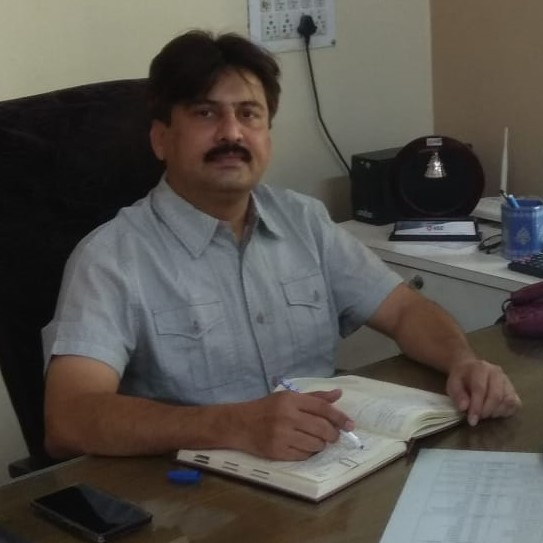

Our Management

Amardeep Singh Sethi
Chairman
Dharampal Kalani
Managing director

Karan Yadav
Executive director
Our Products are manufactured at our distillery situated at Walchandnagar, Maharashtra with total area of approx 40 Acres which is a molasses based distillery. Our majority of the spirit which contains 95% alcohol by nature and also used to manufacture alcohol by the process of rectification is used by chemical and pharmaceutical industries.
Rectified spirit is highly concentrated ethanol purified by means of repeated distillation. It contains 95% alcohol by volume. Rectified Spirit Alcohol is used in mixed drinks, in the production of liquors, for medicinal purposes, and for chemical industry. Rectified Spirit is produced from molasses using yeast in fermentation tanks.
(ENA) - is a colorless alcohol with neutral smell and taste. It is distilled from sugarcane molasses. Extra Neutral Alcohol that is produced by redistillation of rectified spirit, which helps in removing low volatile impurities and high volatile impurities present in it
Denatured Spirit is produced by mixing spirits with denaturants in order to render them potable, generally for use in various industrial applications. Denatured Spirit usually is colorless in appearance. Denatured spirit serves as a cleaning agent, fuel additive, sanding aid, exterminator, and as a solvent
Denatured Spirit is produced by mixing spirits with denaturants in order to render them potable, generally for use in various industrial applications. Denatured Spirit usually is colorless in appearance. Denatured spirit serves as a cleaning agent, fuel additive, sanding aid, exterminator, and as a solvent
(ENA) - is a colorless alcohol with neutral smell and taste. It is distilled from sugarcane molasses. Extra Neutral Alcohol that is produced by redistillation of rectified spirit, which helps in removing low volatile impurities and high volatile impurities present in it
Denatured Spirit is produced by mixing spirits with denaturants in order to render them potable, generally for use in various industrial applications. Denatured Spirit usually is colorless in appearance. Denatured spirit serves as a cleaning agent, fuel additive, sanding aid, exterminator, and as a solvent
Denatured Spirit is produced by mixing spirits with denaturants in order to render them potable, generally for use in various industrial applications. Denatured Spirit usually is colorless in appearance. Denatured spirit serves as a cleaning agent, fuel additive, sanding aid, exterminator, and as a solvent
Chairman
Managing director
Executive director